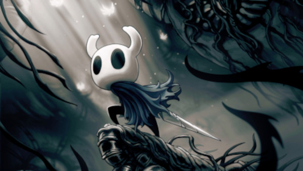

Hollow Knight
Hollow Knight é um premiado jogo de ação e aventura 2D estilo metroidvania lançado pelo estúdio Team Cherry em 2017. O game conta com belos gráficos desenhados à mão, trilha sonora marcante, além de jogabilidade precisa e desafiadora. Uma sequência, intitulada Hollow Knight: Silksong, está em desenvolvimento. O jogo originalmente seria um DLC para Hollow Knight, mas se tornou "muito grande e único para ser um DLC". Mesmo lançado separadamente, os apoiadores da campanha de Hollow Knight no Kickstarter receberão Silksong gratuitamente.
"Encare o desafio de ser uma casca vazia, siga o caminho que deve seguir e através do mesmo descubra que para que hoje você não sentisse nada, outros tiveram que sentir, tiveram que perder suas casas, família e o mais valioso, suas vidas. Torne o desejo de um Rei egoísta, soberbo que não pensou duas vezes antes de tomar uma atitude cruel. Hollow Knight vai te prender, te amarrar e fazer com que você se apaixone por cada segundo vivenciando o que restou de hollownest pela casca do pequeno knight. Nota: 9/10 ⭐"
